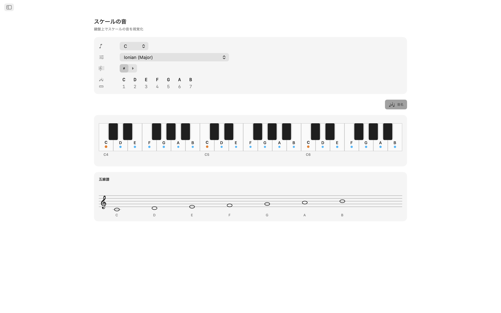
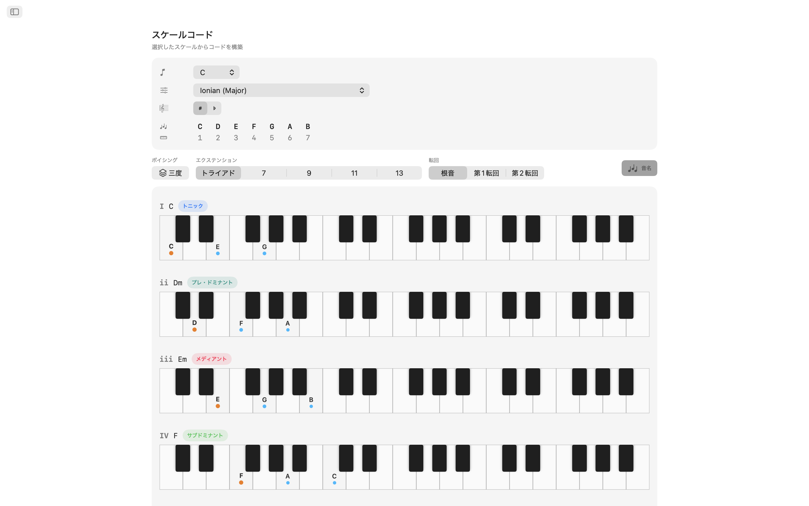
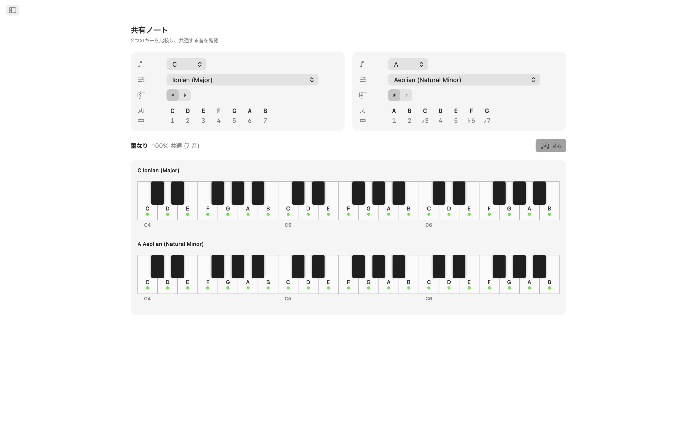
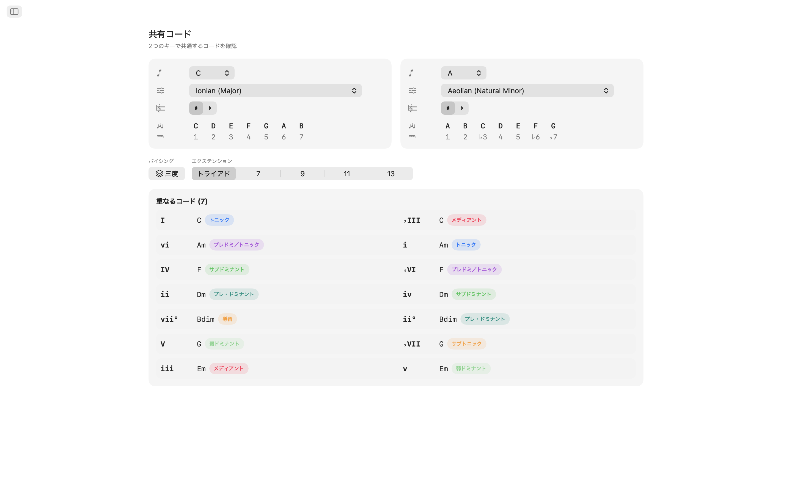
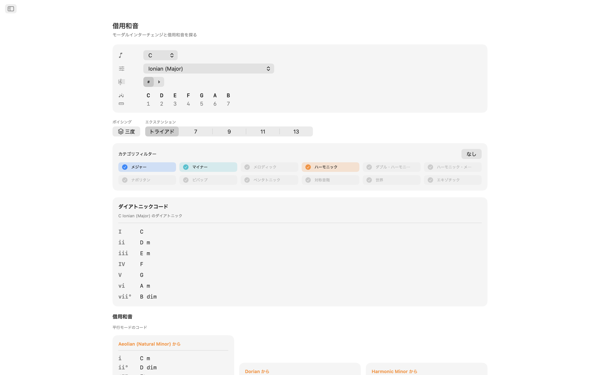
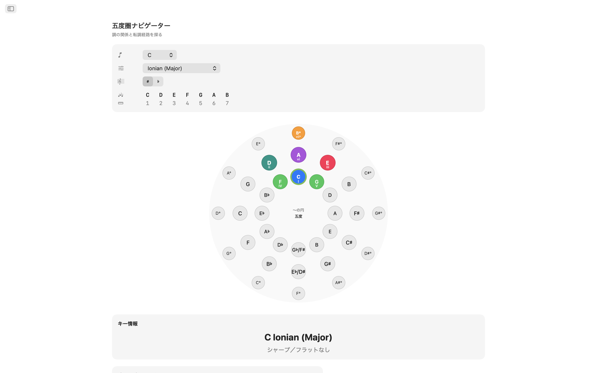
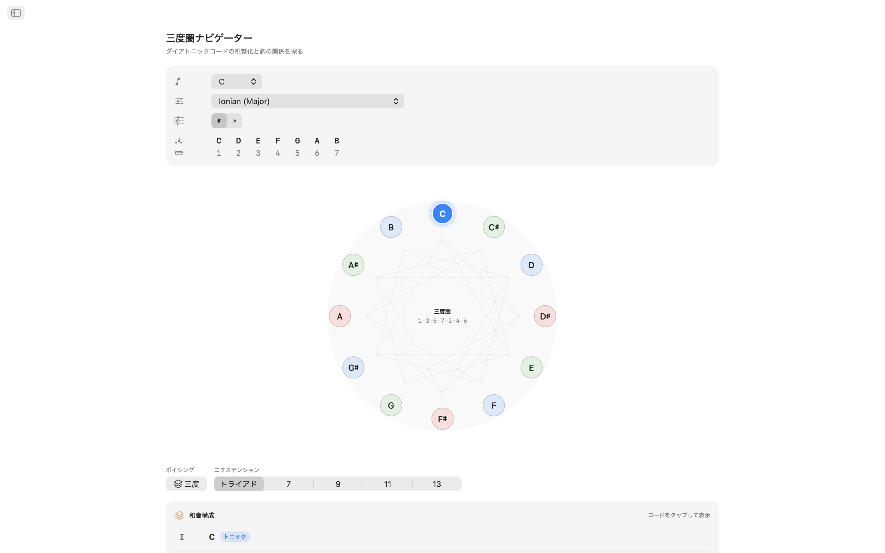
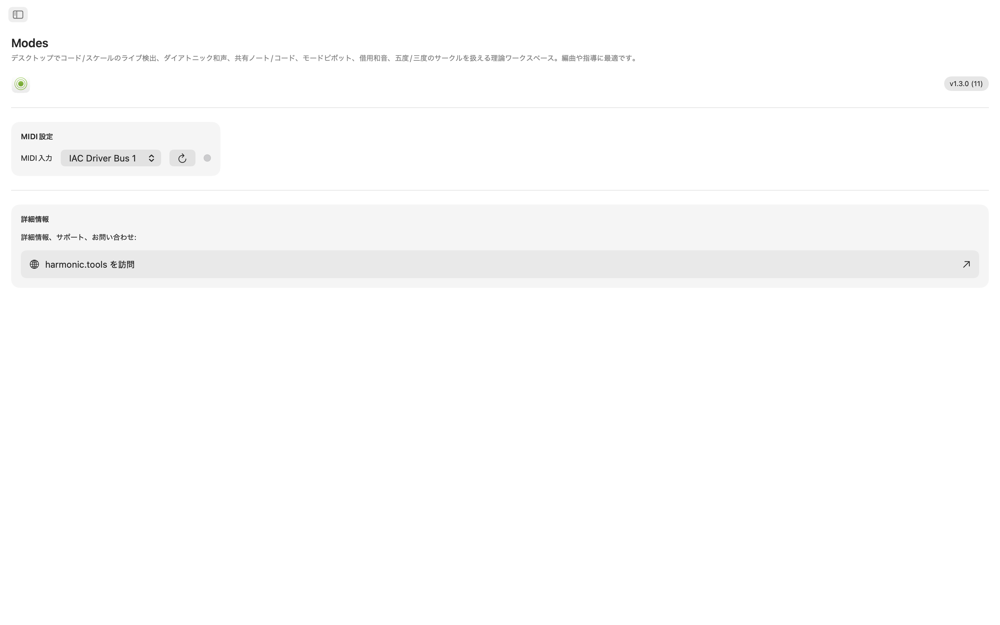

macOS用Modes
macOS用実践的音楽理論ラボ。作曲する時も、レッスンの準備をする時も、新しい和声の領域を探求する時も — Modesはスケール、コード、ボイシング、転調経路に即座にアクセスできます — DAWの横に置けるサイドバーナビゲーションの一つのアプリで。
- MIDI＋画面キーボードでスケール＆コード識別
- 61スケール · 21種類のコードタイプ · 8種類のボイシングファミリー
- 共有音、共有コード、借用コード
- インタラクティブな五度圏＋三度圏
スクリーンショット
ウェブサイトのデザインに合わせたライトモードとダークモードのスクリーンショットを収録。










機能
- スケール＆コード識別：マルチオクターブインタラクティブキーボードで音を押すか、MIDIコントローラーを接続してください。Modesは演奏されたコードをリアルタイムで認識します：メジャー、マイナー、ディミニッシュ、オーギュメント、拡張、サスペンデッドなど。各一致スケールを音のカバレッジに基づいて分類します。スケールカテゴリ（ダイアトニック、メロディックマイナー、ハーモニックマイナー、ペンタトニック、ビバップ、対称、ワールドミュージックなど）で結果をフィルタリングして、求めるサウンドを見つけてください。
- 61スケールとモード：7つのダイアトニックモードからメロディックマイナー、ハーモニックマイナー、ダブルハーモニック、ナポリタン、ビバップ、ペンタトニック、ブルース、ホールトーン、ディミニッシュ、オーギュメント、平調子・雲井・陰旋・ペルシャン・エニグマティックなどのワールドスケールまで。各スケールは音程とともにキーボード上にハイライトされます。
- 調性内の音：ルートとスケールを選択すると、2オクターブにわたって調性内のすべての音がハイライトされます。どの音がスケールに属するか、ルートがどこにあるかを即座に把握。
- ダイアトニックコード：選択したスケールの各音階度に対してダイアトニックトライアドまたは7thコードを生成します。ローマ数字、コード名、和声機能ラベル（トニック、サブドミナント、ドミナント、30以上の詳細ラベル）、ボイシングが適用されたキーボード表現を確認 — すべて簡単に比較できるよう整理されています。
- 8種類のボイシング：三度配置（Tertian）、Sus2、Sus4、6th、Add、クォータル、クインタル、パワーコードでコードを構築。トライアドから13thまで選択 — 各拡張に自動的にラベルが付きます。
- 共有音＆コード：2つの調性を並べて比較。どの音が重なるか、どの音が固有か、2つの調性が共有するコードは何かを確認。スムーズな転調やリハーモナイゼーションに不可欠です。
- 借用コード：調性を分析し、固有ダイアトニックコードと平行モードから借用したすべてのコードオプションを元のモード別にグループ化して表示。調性の中心を離れずに新しい和声の色彩を発見。
- 五度圏：二重リングインタラクティブ（外側メジャー、内側ナチュラルマイナー）。セクターをクリックして調性を変更。ドミナント、サブドミナント、関係調、近親調、隣接調の関係を転調難易度ラベルと調号の詳細とともに一目で確認。
- 三度圏：減和音循環ダイアグラムで半音階的メディアント関係を探求。各ピッチクラスに対するメジャーおよびマイナー調性がメディアント、関係調、近親調の接続を表示。映画的およびネオリーマン転調を計画するのに最適です。
- MIDI対応：すべての互換MIDIキーボードまたはコントローラーを接続。演奏した音が画面クリックと組み合わさり、シームレスな識別が可能です。
デスクトップのための設計
- 完全オフライン動作 — アカウント、広告、トラッキングなし
- サイドバーナビゲーション付きネイティブmacOSアプリ
- システムモードに従うダークモード対応インターフェース
- 異名同音表記：自動、シャープまたはフラット
- リサイズ可能なウィンドウ — DAWの横に開いておけます
コード進行を構想するプロデューサー、モードを学ぶギタリスト、ジャズハーモニーを勉強するピアニスト、理論試験を準備する学生 — Modesは高度な音楽理論をデスクトップにお届けします。
音楽理論カバレッジ
アプリに含まれるすべてのスケール、モード、コード、ボイシング、音程の完全リファレンス。
61 スケールとモード
21 コードタイプ
8 ボイシングファミリー
12 半音階的音程
16 ハーモニクス
32 和声機能ラベル
スケールとモード — 61
長調モード（ダイアトニック）
メロディックマイナーモード（ジャズマイナー）
ハーモニックマイナーモード
ダブルハーモニックマイナーモード（ハンガリアンマイナー）
ハーモニックメジャー
ナポリタンマイナーモード
ナポリタンメジャーモード
ビバップ
ペンタトニック＆ブルース
対称＆合成スケール
日本のペンタトニック
ワールド / その他
コード
認識されるコードタイプ — 21
21種類のコードタイプを認識し、拡張テンション（9th、11th、13thは7thがない場合add9、add11、add13と表示）を自動検出します。
コードクオリティ（コードビルダー）— 6種類
ローマ数字分析付きコードビルダーで使用可能なコードクオリティ。
コードボイシング — 8タイプ
三度配置（Tertian）から四度・五度の積み重ねまで、トライアドから13thまで。
音程、ハーモニックシリーズ＆分析
転回を含む12の半音階的音程、16のハーモニックシリーズ、すべての調性での完全な五度圏探索（シャープ＆フラット表記と自動/手動の異名同音オーバーライド）、トニック・サブドミナント・ドミナントファミリーの32の和声機能ラベル。